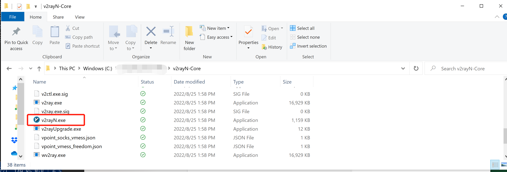
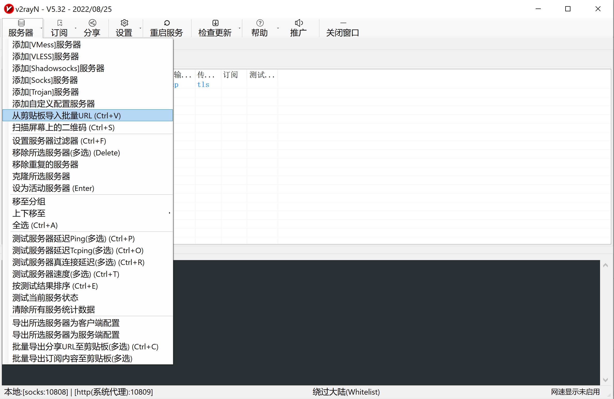
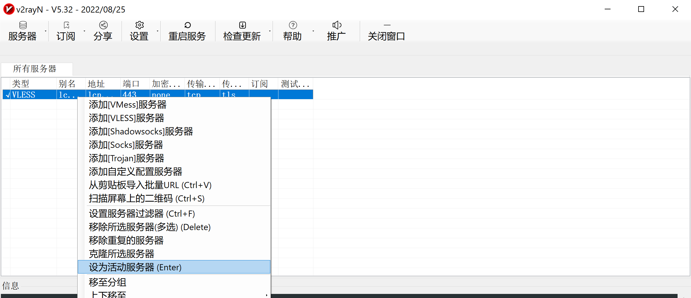
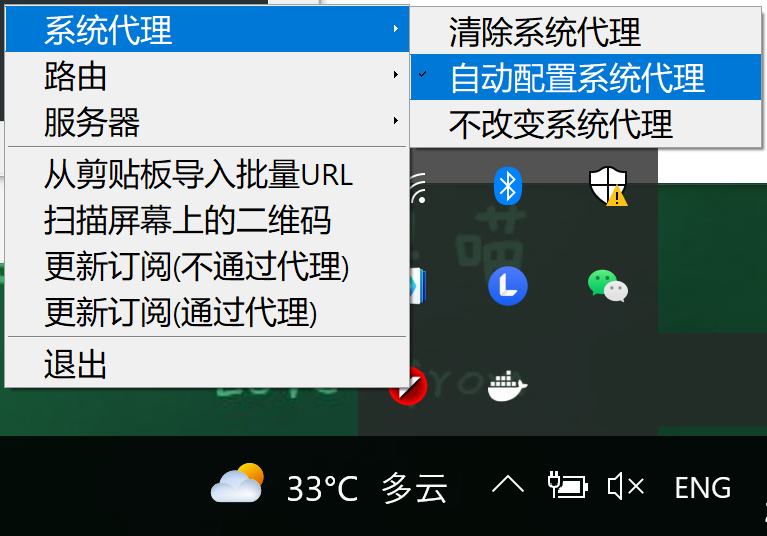
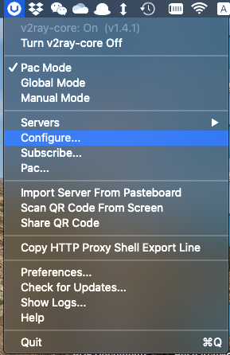
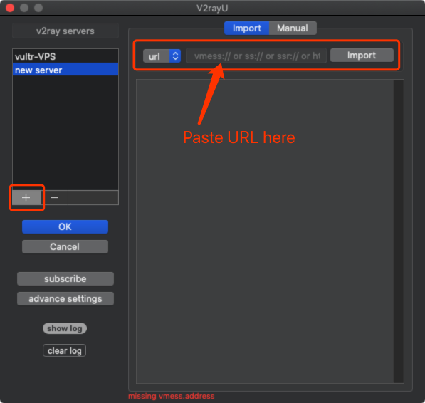
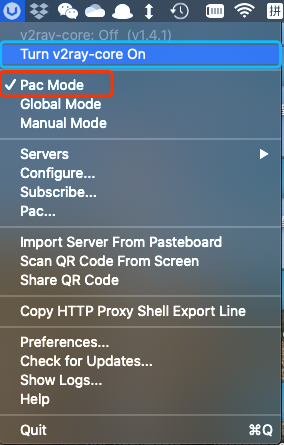
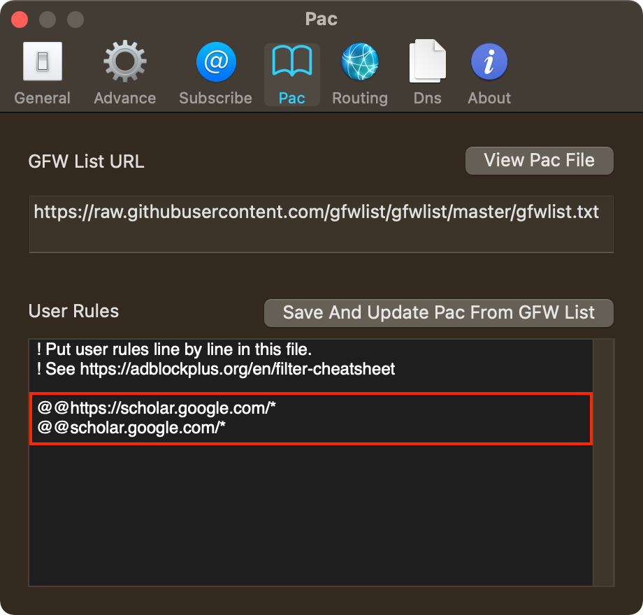

V2ray Client Setups
Contents
V2ray Client Setups#
Reference: 从零开始：史上最详尽V2Ray搭建图文教程
Installation#
Download v2rayN-Core.zip
Install V2rayU
Install from homebrew
brew install --cask v2rayu
Install from package
Download the latest version
Configuration#
Run
V2RayN.exeto configure.
Add new server.
Copy the URL from the administrator, and import it through the option below.

Right-click to activate imported server (only required once).

Choose proxy mode
Right click the icon of v2rayN in the taskbar, and switch the setting as shown below. 
Run V2rayU from the Launchpad, then open configure.

Add new server and import settings with URL copied from administrator.

Turn v2ray-core on and switch to PAC mode.

(Optional) Customize PAC rules if needed.

Enjoy yourself with Google, Youtube, Dropbox, Docker, and etc.